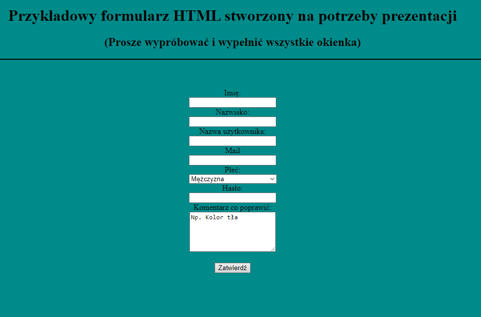
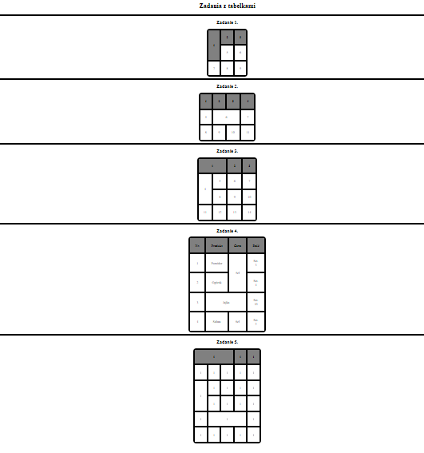
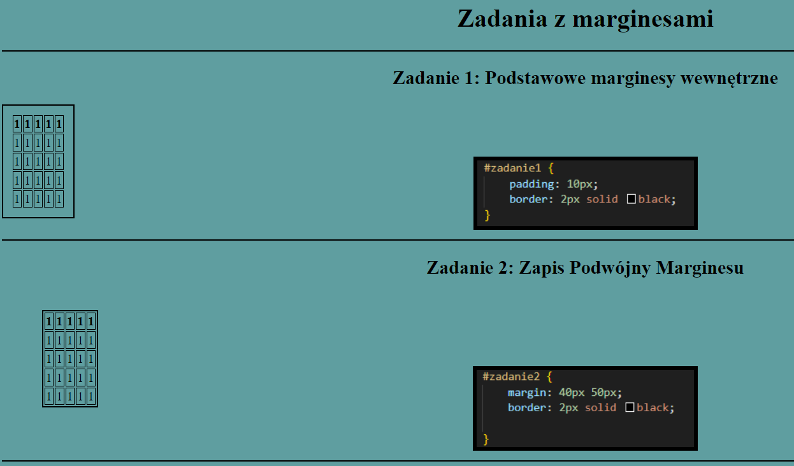
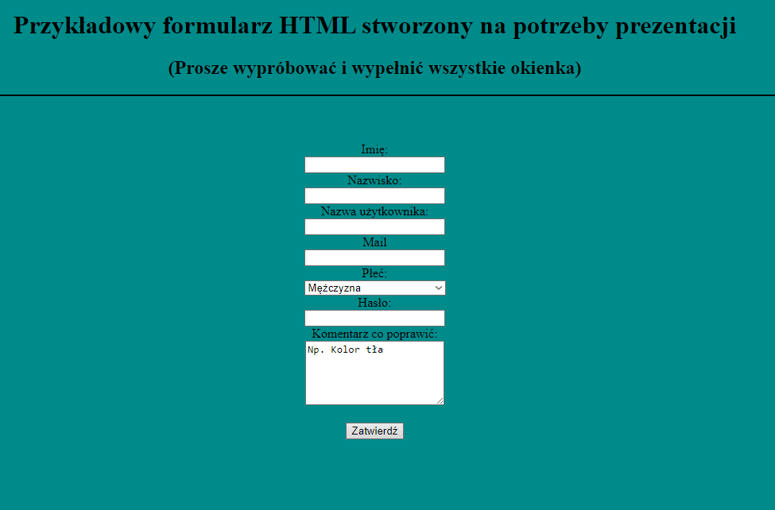
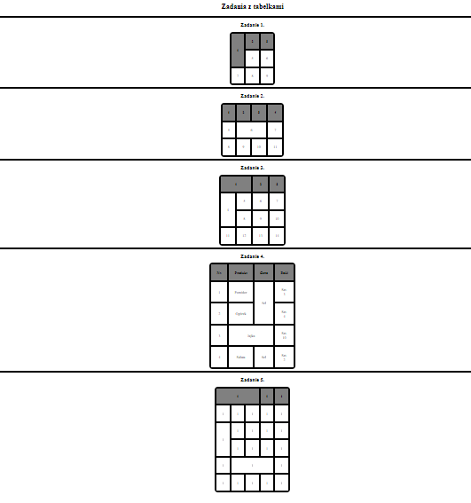
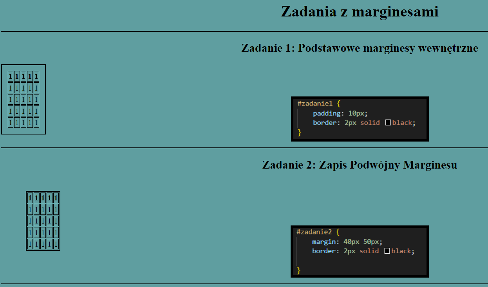

| Liczba porządkowa | Nazwa projektu | Miniaturka(LINK) | Data |
|---|---|---|---|
| 1. | Pierwsza Strona |  | 03.09.2024 |
| 2. | Przykładowy Formluarz |  | 13.09.2024 |
| 3. | Tabelki do zadania |  | 16.09.2024 |
| 4. | Zadania z marginesami |  | 18.09.2024 |
| Liczba porządkowa | Nazwa projektu | Miniaturka(LINK) | Data |
|---|---|---|---|
| 1. | Pierwsza Strona | | 03.09.2024 |
| 2. | Przykładowy Formluarz |  | 13.09.2024 |
| 3. | Tabelki do zadania |  | 16.09.2024 |
| 4. | Zadania z marginesami |  | 18.09.2024 |